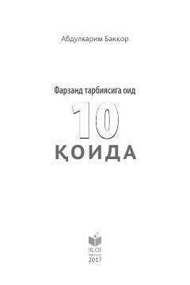

FTFarzand tarbiyasida ota-onalar uchun eng muhim o'nta asosiy qoida va tavsiyalar.
Ushbu kitob farzand tarbiyasi bo'yicha ota-onalar uchun eng muhim bo'lgan o'nta asosiy qoidani jamlagan. Muallif bolalar bilan muomala qilish va ularni to'g'ri tarbiyalashda zarur bo'lgan nazariy hamda amaliy tavsiyalarni sodda tilda bayon etadi.